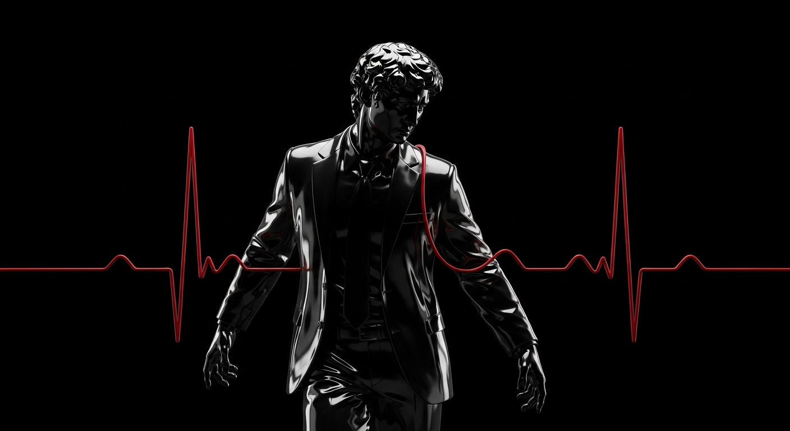

The answer does not lie in seeking, nor in attempting to predict or analyze. Instead, we must carve out an open space, allowing it to simply exist within.
🐎 The Racetrack
📏 Rules
The rules an artist learns are different. They are hypothetical rather than absolute. They outline directions or methods to achieve short-term or long-term outcomes. Their very existence is meant to be tested. They only possess value insofar as they are helpful. They are not laws of nature.
— Rick Rubin, The Creative Act
You must clearly understand what the rules are before you can break them. You can always tell whether the chaotic elements in someone's work are deliberate or born out of helplessness. The underlying reason usually comes down to a series of tiny details you subconsciously look for; when rules are broken with intent, the effect is invariably stronger and the impact far more significant.
— Robin Williams, The Non-Designer's Design Book
I will strive to make it identical to the page in the screenshot—whether it's the background style, font selection, text weight, line spacing, color palette, or the positioning of every single element. I aim to be pixel-perfect. Afterward, I will overlay the translucent screenshot onto my own PowerPoint slide to see which nuances fail to align perfectly. Compared to simply referencing the style to create a slide with different content, the benefit of this approach is avoiding the trap of "using templates." The ultimate taboo when learning design is mindless application. If you don't engage in extensive "one-to-one replica" exercises and just plug things in, you will never truly grasp why the original creator made those choices and why those specific details were handled that way.
— Xu Cen, Teaching Yourself How to Self-Teach
Arguments over what kind of lifestyle one ought to lead are often just people of differing temperaments talking past each other.
— Morgan Housel, The Art of Spending Money
History experiences structural progress; every era is fundamentally new. Once people learn from historical lessons, they alter the course of history, rendering those earlier lessons obsolete. The chain of historical events is fraught with contingency. The kind of "historicism" that believes history possesses an inevitable trajectory or deterministic laws is a flawed worldview. History, in truth, is merely a collection of accidents. The greatest utility of various historical narratives is to stretch your imagination. If you can merely conceive of the "possibilities" of various actions when the time comes, that's already an achievement. Only then should you begin to weigh the "probabilities."
— Wan Weigang, Buddha Fears the System
⏸️ Pausing
If something strikes me as interesting or beautiful, my first instinct is to simply linger in that experience; only later will I attempt to comprehend it.
— Rick Rubin, The Creative Act
When I restrict myself to wandering in one specific place rather than constantly walking ahead, I tend to discover far more compelling photographic subjects.
— Ibarionex Perello, Making Photographs
I love to observe, absorb, and document the diverse activities of life, feeling that this kaleidoscopic variety is itself a value, an achievement. I have no impulse to synthesize all the bizarre phenomena and fleeting glimpses into a singular, ultimate revelation—a transcendent beam of light that encompasses and overrides everything else. The best poets possess their own vibrant instincts, employing the most dogmatic methods to sift and distill millions of questions until they arrive at a final, solitary answer—or perhaps, a solitary question.
— Yang Zhao, Poetic
So, how do we tune into signals that can neither be heard nor defined? The answer does not lie in seeking, nor in attempting to predict or analyze. Instead, we carve out an open space, allowing it to exist. This space is entirely devoid of our usual cluttered, gridlocked mental states. It acts as a vacuum, drawing out the ideas that the universe has already unlocked.
— Rick Rubin, The Creative Act
People who once gathered in a shared space to collectively experience an event now gather simply to share that experience with those who aren't there.
— Pamela Paul, 100 Things We've Lost to the Internet
Please remember that when others read your work, they do not download the entire text into their brains instantaneously. Reading is an experience, and whether that experience reaches a satisfying conclusion is entirely up to you.
— Thomas S. Mullaney & Christopher Rea, Where Research Begins
I feel that writing holds profound significance for me; I have yet to find another medium that allows me to engage in such extended, focused contemplation on a single topic or focal point. Writing, as it turns out, is the most concentrated form of thought I am capable of possessing. The "me" within the writing is far superior to the "me" in reality, or the "me" speaking right now. The real-life me could never be this precise, this focused. It was only later that I realized: it's not that writing needs me, it's that I need it.
— Tang Nuo, Thirteen Interviews 3: "We Are All Footnoting the Big Questions"
⏳ The Return
It sounds heavy to ponder, but there is no more potent piece of information in the world than knowing precisely how much time you have left.
— Morgan Housel, The Art of Spending Money
I suspect memory serves as the ultimate redemption: standing one step away from death, at that final foothold, every remembered thing reveals a fresh meaning. Consequently, a person is no longer burdened by sorrow, nor crippled by confusion. As for what cannot be remembered, time has proven it immaterial, and thus naturally unnecessary to retain. Therefore, one feels abundant and free of regret. I imagine the mindset of someone accompanying death ultimately looks like this: you have comprehended everything you needed to record. To them, the world at that moment must feel both exquisitely compact and boundlessly vast.
— Tong Wei-ger, Northwest Rain
My father's memory declined during the final years of his life, and it's not hard to imagine what a heavy topic this was for all of us. Moreover, this deterioration made it difficult for him to maintain his customary rigor in writing, leaving him feeling desperate and defeated. I remember one occasion when he told us, with the clear, forceful eloquence of a great writer: "Memory is both my raw material and my tool. Without memory, I have nothing."
— Gabriel García Márquez, Until August
Older generations often say, "Don't throw these things away; we might need them later." This reminds me that items with no future use truly have nowhere left to belong. For the elderly, whether an old item will actually be used in the future isn't what matters; what truly matters is viewing themselves as people who still have a future.
— Wang Xiaowei, The Depths of the Everyday
Allow me to quote Wittgenstein once more: "Death is not an event in life." This is an axiom, an undeniable reality. Fundamentally, the definition of death is the cessation of human experience; therefore, death, falling outside of experience, naturally cannot exist within the realm of human experience. This irrefutable truth, proposed by Wittgenstein, delivered a massive shock—essentially dismantling a significant portion of human civilization from a logical standpoint. That portion—comprising all our descriptions, imaginations, and projections regarding death—was stripped of its validity. Death cannot be experienced; any explanation or argument concerning death articulated from a human perspective is inherently false. Humans can only possess human experiences, and death is not among them.
— Yang Zhao, Ambiguity is Truth
💡 Fleeting Thoughts

With the severe aging of our population, I'm no longer sure who I should be giving up my seat for.
The secret to successful investing in parallel universes: whenever you fail, just die.
I heard we're developing humanoid robots because our world is designed for humans; for instance, wheels just aren't practical for climbing stairs. Thus, accessibility design will inevitably serve as a boon for technological advancement.
It brought to mind this line written by Lu Xun: "In my backyard, you can see two trees over the wall; one is a date tree, and the other is also a date tree." This, too, is an endeavor to recreate sensory perception through language.
The first person who ever extended a rugby ball to me.